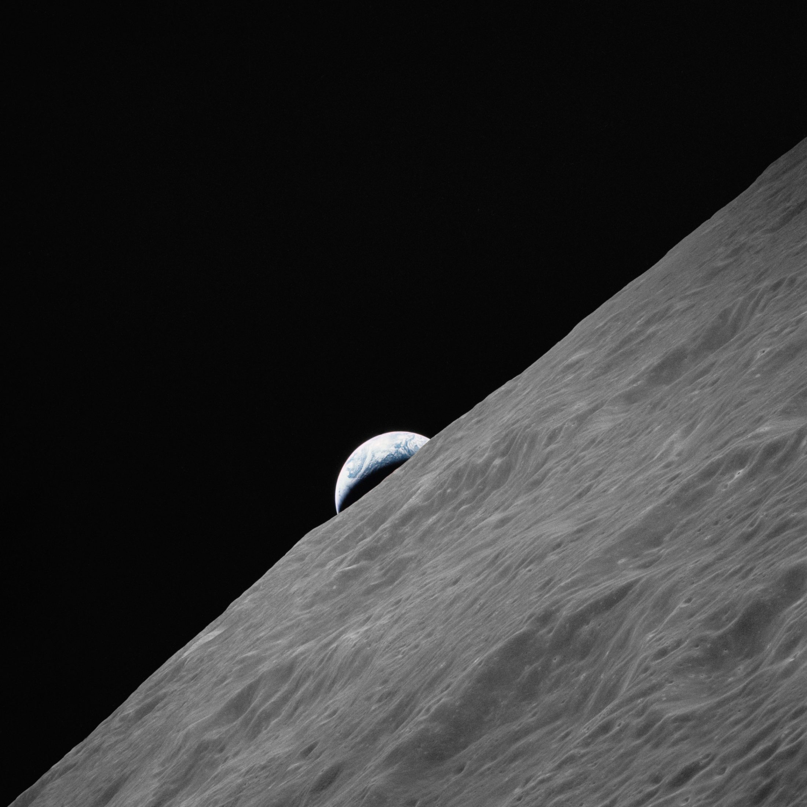
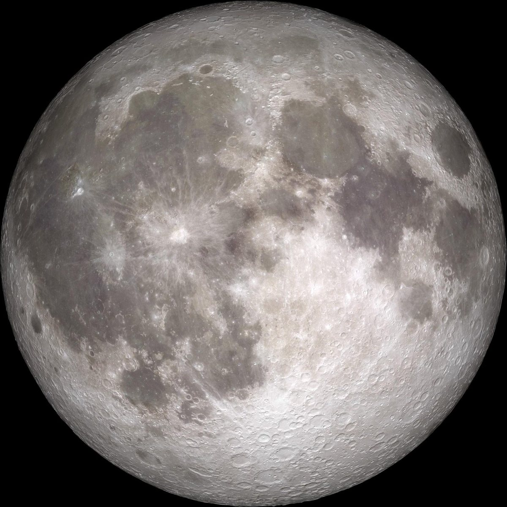
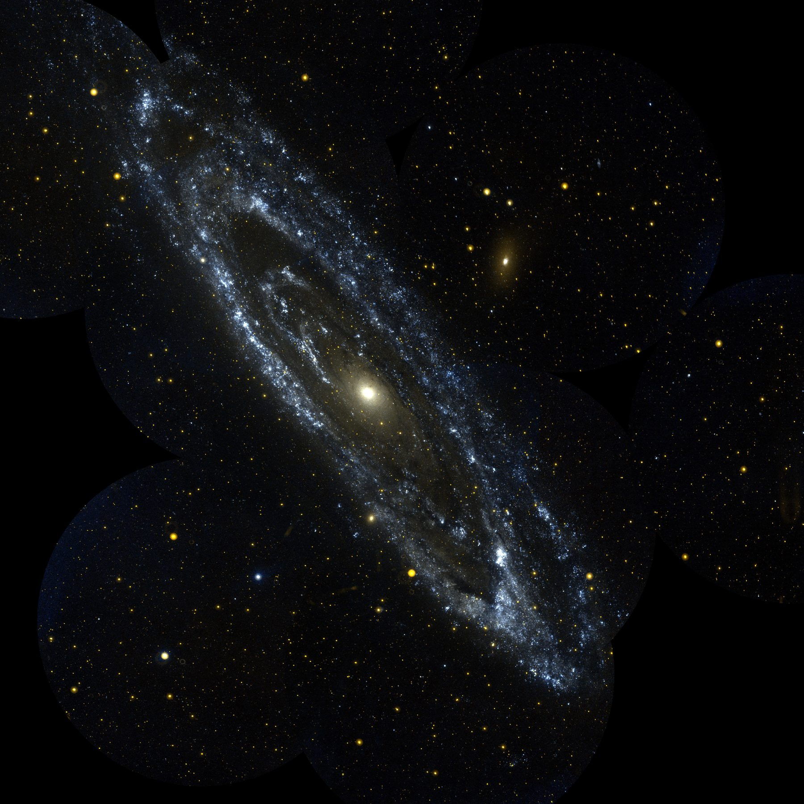

Eight worlds. No two alike.
Keep scrolling and the planets drift past, from the nearest the Sun to the farthest. Real spacecraft images, with the numbers that matter.
Scroll to leave Earth. At every stop you will see real photographs and footage from NASA, and learn what you are looking at. No background needed.


The Moon is our nearest neighbour. Its light reaches you in about 1.3 seconds. Earth is the little blue dot rising over this lunar horizon.
Sunlight left the Sun about 8 minutes and 20 seconds ago. This is the Sun in ultraviolet light, filmed by a NASA satellite, as a flare erupts from its surface.
Keep scrolling and the planets drift past, from the nearest the Sun to the farthest. Real spacecraft images, with the numbers that matter.
Your mass stays the same everywhere. Your weight changes with gravity. Enter your weight on Earth.
That star is Proxima Centauri. Stars are not points of light: they are suns, born in clouds like the Orion Nebula behind you, and every one of them will die.
This is home: the Milky Way as it would look from far above. The amber ring marks roughly where we are. Move through it and watch the stars fall back into orbit.
It is the nearest large galaxy, and it is drifting toward ours. In a few billion years the two will merge.

Light takes time to travel. The farther away something is, the older the light we see from it. Some of the light in the next image left before Earth existed.
No timer, no sign-up. You get the explanation after every answer, right or wrong.